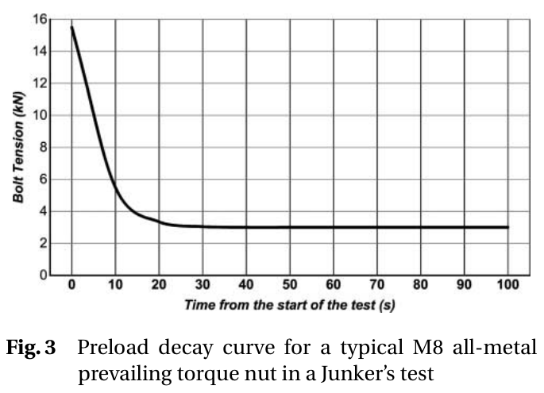
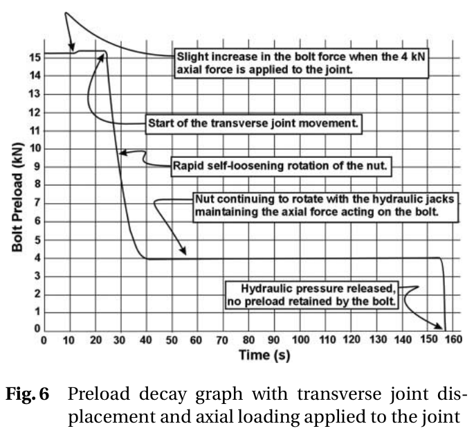
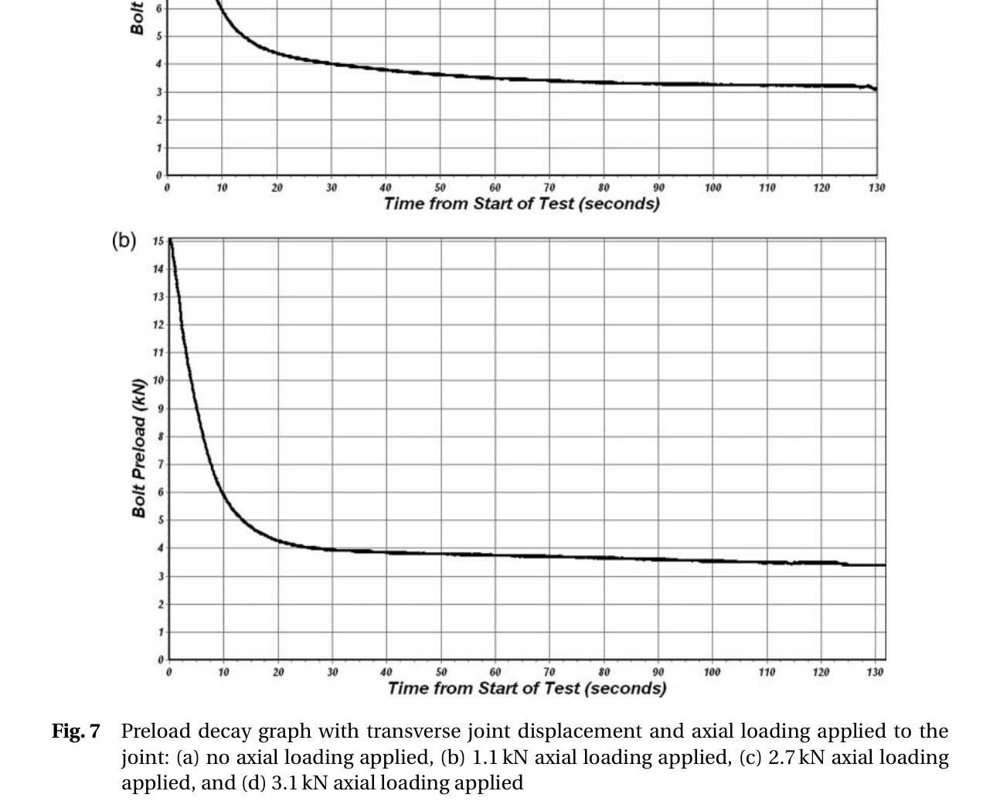
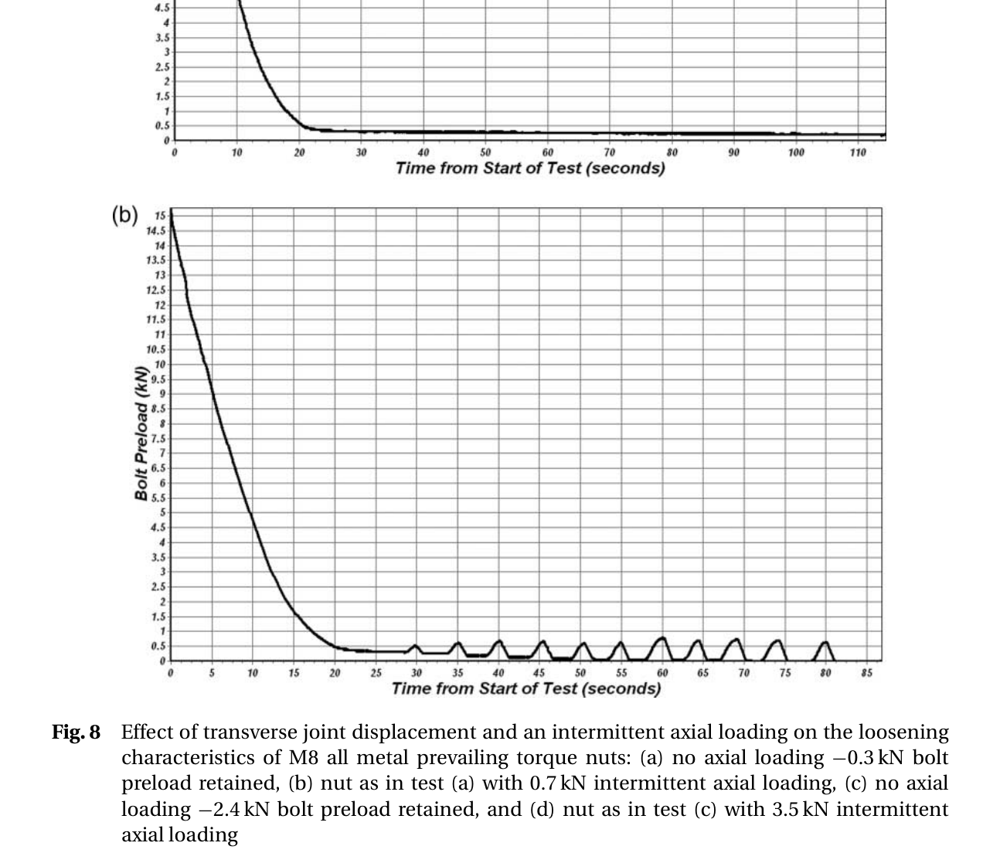

Eccles 2010 — estudo de caso— case study
Figura do artigoPaper figure




Figura(s) originais do artigo (recorte do PDF) — a fonte dos pontos que foram digitalizados.Original figure(s) from the paper (PDF crop) — the source of the digitized points.
Condições do ensaioTest conditions
| ReferênciaReference | Eccles et al. (2010). Proc IMechE C 224:483-495 · doi:10.1243/09544062JMES1493 |
| ParafusoBolt | M8x1.25 |
| Pré-carga F0Preload F0 | 15 kN |
| AmplitudeAmplitude | ±0.65 mm |
| FrequênciaFrequency | 12.5 Hz |
| Família / nº de curvasFamily / curves | transverse · 10 |
| MAE medianomedian | 0.029 |
Informações do artigo — aparato, corpo-de-prova, matriz de ensaiosPaper information — apparatus, specimen, test matrix
Eccles, Sherrington & Arnell 2010 (Proc IMechE Part C) — Towards an understanding of the loosening characteristics of prevailing torque nuts
Citation + DOI
W. Eccles, I. Sherrington, R.D. Arnell, "Towards an understanding of the loosening characteristics of prevailing torque nuts," *Proc. IMechE Part C: J. Mechanical Engineering Science* 224(2) (2010) 483-495. DOI: 10.1243/09544062JMES1493. Jost Institute for Tribotechnology, University of Central Lancashire, UK. (Note: journal cover year is 2010, but the running headers on the PDF itself print "Proc. IMechE Vol. 223" — a volume/year cross-reference artifact of the journal's own production; DOI and title page year (2010) are used here as authoritative.)
Gap tag(s)
- G7 (primary) — locking-device-specific preload-decay curves for **all-metal
prevailing torque nuts** (Stover/oval/tri-dent family — Fig. 1(b)/(c)/(d) in the paper), the *"loosens-then-stops-at-a-plateau"* signature that is the defining behavior of a prevailing-torque locking device (as opposed to a free-spinning plain nut, which — per this same paper's own Discussion — keeps rotating to F=0 once axial load is present).
- **Combined axial + transverse loading (novel, not a standard gap letter in the
existing taxonomy but the paper's central contribution) — a modified Junker (DIN 65151) rig that superimposes a controllable, independent axial tension (via miniature hydraulic jacks, constant or intermittent) on top of the standard transverse-slip displacement. This is NOT the same as an axial-vibration rig (e.g. Liu2016/Liu2017 in this library) — here the transverse motion is the self-loosening driver and the axial load is a superimposed sustained/pulsed external tensile boundary condition** that interacts with whatever preload the transverse slip has already eroded.
- **G5-adjacent (new-vs-reused nut runs) — present but NOT a clean isolated
comparison. The paper states "in total over 50 nuts were tested, and, in general, the prevailing torque of better quality nuts remained reasonably constant when they were re-used up to five times" (qualitative only, no paired curve given). What IS shown is implicit reuse: Table 1 groups tests by physical nut** (e.g. tests 3-7 = same nut, retightened to 15 kN and rerun at increasing axial-load levels). So tests 4-7 in a group are technically "reused" states of the test-3 nut (already subjected to one prior transverse-loosening run at minimum) — but the paper does not decompose reuse-degradation from axial-load effect, and does not show a dedicated 1st-use-vs-5th-use preload-decay overlay. Treat as a structural nuance, not a clean new-vs-reused dataset.
Rig / apparatus
- Base machine: standard Junker-type vibration test machine (the DIN 65151
"standard method" for assessing fastener locking performance), modified by the authors to add axial loading. Photos/schematics in Fig. 4 (overall view) and Fig. 5 (section view).
- Transverse loading direction / control mode: displacement-controlled.
An eccentric cam driven by an electric motor generates the transverse movement — a positive-displacement (kinematic) drive, i.e. the stroke ±0.65 mm is imposed geometrically regardless of the resisting force. This is the BAS V2 delta_amp mode, not force-mode. Frequency 12.5 Hz (fixed, all tests). The test bolt passes through a bush that clamps the load cell to a fixed base plate; the nut is attached to the bolt through a plate subjected to the transverse movement; moving and fixed base plates are separated by needle roller bearings, specifically to minimize plate-to-plate sliding friction so that the measured preload decay reflects nut-face/thread friction under transverse slip, not spurious rig friction.
- Axial loading direction / control mode: force-controlled, superimposed
independently of the transverse motion. Miniature hydraulic jacks apply a tensile axial load FA to the joint; oil pressure regulates the magnitude. Axial load is always smaller in magnitude than the preload. Two loading modes tested: constant (jacks hold a fixed pressure throughout the transverse run) and intermittent (axial load applied/released periodically while transverse motion continues). This combined displacement-controlled-transverse + force-controlled-axial arrangement has no direct equivalent in the current V2 engine (see V2 mapping below).
- Preload measurement: a load cell built into the joint load path
(in-line, under the bush/base-plate clamp) continuously monitors bolt tension; signal goes through an analogue-to-digital converter to a computer that continuously records bolt preload (Fig. 4). Continuous (not periodic-checkpoint) measurement, high temporal resolution — hence the visible fine-grained "noise"/micro-oscillation texture in every decay curve.
- Several (unspecified number and type of) other all-metal prevailing-torque
nuts were tested "but not reported here" and "found to have similar loosening characteristics" — i.e. the paper explicitly states its own reported curves are a representative subset, not the full test program.
Specimen / materials
- Bolt: M8, electro-zinc-plated. No ISO property class (8.8/10.9/12.9)
stated anywhere in the paper — a genuine gap if a specific yield/tensile strength is needed. Thread lead angle β = 3° (explicitly stated, used in the paper's own analytical Tss derivation, equations 3-10). Thread pitch/pitch-diameter values are not tabulated numerically (only used symbolically in the torque-tension equations).
- Nut: all-metal prevailing torque nut only (the paper's Fig. 1 shows 4
general PT-nut sub-types — (a) nylon insert, (b) slotted top-thread all-metal, (c) elliptical top-thread all-metal, (d) spring-steel-insert all-metal — but Section 7 "Further Work" explicitly states "these tests have been conducted on an all-metal variety of prevailing torque nut," i.e. only ONE locking sub-family was actually tested/reported here, not the nylon-insert type despite it appearing in Fig. 1/Fig. 2's introductory material). Best DB mapping: all_metal_prevailing_nut (locking_devices.json, index 2 in MSDBuilder._LOCKING_DEVICE_KEYS) — Stover/oval/tri-dent family, ISO 7042 type T.
- Prevailing torque measured on the actual test nuts: 1.5-2.3 N·m — this is
BELOW the codebase DB default for all_metal_prevailing_nut/M8 (3.5 N·m) and also below the cited performance-standard first-assembly maximum (6 N·m) and above its 5th-removal minimum (0.6 N·m). A real, paper-specific measured band that could tighten the DB entry's M8 prevailing-torque value if this paper's nuts are judged representative (flagged, not changed here). Standard cited (ref. [3], full bibliographic entry not present in the extracted PDF text — likely ISO 2320 or an equivalent prevailing-torque performance spec).
- Member / fixture: not a conventional two-flange clamped joint. The bolt
passes through a bush that clamps the in-line load cell to a fixed base plate; the nut bears on a plate that is the moving (transversely displaced) member. No washer is separately mentioned — the moving plate itself is the nut-bearing surface. Fixture material not stated (typical hardened-steel Junker-rig hardware, not confirmed in text).
- Surface finish / roughness: not reported (Ra/Rz absent) — cannot assign a
emb_depth_vdi roughness class from this paper alone.
- Lubrication: not mentioned (bolts are "electro-zinc-plated," no separate
lubricant stated) — presumed as-plated dry/as-supplied friction condition.
Test matrix
| Variable | Levels |
|---|---|
| Bolt size | M8 only |
| Nominal preload F0 | 15 kN (ALL tests, per Table 1 footnote) |
| Transverse displacement | ±0.65 mm (fixed, all tests) |
| Frequency | 12.5 Hz (fixed, all tests) |
| Axial load FA (constant-mode tests) | 0 (baseline), 0.1, 0.4, 0.5, 0.6, 0.7, 0.8, 1.0, 1.1, 2.2, 2.7, 3.1, 4.1, 5.3 kN — swept per nut group (Table 1, tests 1-29) |
| Axial load FA (intermittent-mode tests) | 0.7, 3.5, 5 kN — periodic on/off while transverse motion continues |
| Test duration | typically 2 min ≈ 1500 transverse cycles (Table 1 footnote; individual graphed runs range ≈100-160 s ⇒ ≈1250-2000 cycles at 12.5 Hz) |
| Nuts tested overall | "over 50" (only a subset of 29 numbered tests in Table 1, and only a further subset of those — 10 panels total across Figs 3/6/7/8 — actually plotted as decay curves) |
| Curves actually digitized here | 10 (see inventory) |
| New vs reused | not a controlled variable — each nut group's later tests are implicitly "reused" states of the same physical nut (retightened to 15 kN between tests); no isolated 1st-vs-5th-use decay-curve comparison provided |
Table 1 (full, for reference — not itself digitized as a curve, but the precise final-retained-preload numbers from it were used to anchor the plateau/endpoint of the Fig. 7/8 curves below): 29 tests grouped into 7 nut groups (tests 1-2, 3-7, 8-11, 12-15, 16-21, 22-25, 26-29), each starting with a "None" (no-axial) baseline then 2-5 axial-load follow-ups (constant and/or intermittent) on the SAME retightened nut. One entry (test 27, "0.5 kN Constant → 2.4 kN retained, same nut as test 26") is numerically inconsistent with the ~2.4 kN "no axial load" value the running text reports for the Fig. 8(c) nut — see Digitization caveats.
Experimental nuances
- The central finding: under transverse slip alone, a prevailing torque nut
self-loosens rapidly at first, then stops at a non-zero residual/plateau preload — the magnitude of that plateau is set mainly by the nut's prevailing torque. When a sustained (constant) or repeated (intermittent) axial tensile load is superimposed, the nut continues rotating past the no-axial plateau, converging toward a new, lower quasi-plateau near the applied axial-load magnitude — and if the axial load is high enough, rotation continues until the retained preload reaches exactly zero and, critically, the nut can then completely detach from the bolt (unlike the no-axial case, and unlike a standard DIN 65151 test on the same nut type).
- **Detachment threshold (the paper's key quantitative result, eq. 14 in the
text, mislabeled "(14)" twice — appears as both eq. 13 and eq. 14 in the PDF, an original-paper typo)**: continued rotation (→ eventual detachment) occurs when the applied axial load FA exceeds the residual preload that the SAME nut would retain from transverse movement alone (FA > 4π·Tps/(3p), algebraically identical to "FA > residual preload with zero axial load"). Empirically confirmed across every nut group in Table 1: whichever axial-load level exceeded that nut's own no-axial residual preload drove the final retained preload to 0; levels below it left the retained preload roughly unchanged from the no-axial case (e.g. nut group 3-7: no-axial retains 3.2 kN; 1.1 and 2.7 kN axial loads leave ≈3.4/2.7 kN retained; but 3.1 and 4.1 kN axial loads — both above the 3.2 kN no-axial residual — drive it to 0).
- **Constant-axial test protocol has a distinct final step not present in the
no-axial baseline runs**: at test completion the hydraulic pressure is released, dropping the axial load to zero; if the nut had continued rotating under the axial load (i.e. FA exceeded the no-axial residual), the observed preload AFTER release is exactly zero (no elastic recovery — the joint has no clamping torque left to sustain anything). This final release-to-zero step is visually explicit only in Fig. 6 (the annotated schematic example) and Fig. 7(d); Figs. 7(a)-(c) do not show a release step within the plotted window (their end-of-test value already equals the reported "retained" number).
- Intermittent-axial test signature: a sawtooth/ratchet pattern — each
application of the axial pulse causes a rapid partial rotation (preload spikes up toward the momentary axial-load level), then when the pulse is removed the preload partially holds; the NEXT pulse causes further incremental rotation, so the inter-pulse baseline trends down over successive pulses. Even after the inter-pulse baseline reaches exactly zero, the paper explicitly notes nut rotation is still visible each time the axial pulse is (re-)applied — i.e. detachment-in-progress can continue with zero measured static preload between pulses (Fig. 8(d) shows the inter-pulse trough pinned at 0 kN from ≈t=100 s onward while ≈3-3.5 kN pulses continue).
- Slight preload increase on axial-load application: because of how an
externally applied tensile axial load partitions between "unloading the joint clamp" and "adding to bolt tension" (the paper's own general torque-tension discussion: typically ~90% relieves clamp force / ~10% adds to bolt tension for structural joints, up to joint separation), simply switching the hydraulic jacks on (before any transverse-slip-driven rotation occurs) causes a small, real, immediate increase in bolt tension — visible as the small step at t≈0-20 s in Fig. 6's annotated curve ("slight increase in bolt force when the 4 kN axial force is applied to the joint").
- Same finding extends to plain (non-locking) nuts (Discussion/Conclusions,
qualitative only, no curve given): on a standard Junker test a plain nut stops rotating once its preload reaches zero (it simply free-spins loose but stays threaded on); with an axial load present, plain-nut rotation does NOT stop at zero and continues to full detachment — i.e. the axial-load detachment mechanism is not specific to prevailing-torque nuts, it is a general joint-mechanics effect that prevailing torque merely delays/raises the threshold for. No plain-nut curve is plotted in this paper (qualitative statement only) — a gap if a plain-nut combined-loading curve is wanted for contrast.
- Table 1 test-27 numeric inconsistency (own paper's internal
inconsistency, not a digitization error on our part — see Digitization caveats): the running text says the Fig. 8(c) "no axial load" nut retained "~2.4 kN," but Table 1's "None" row for that same nut group (test 26) lists 0.7 kN; instead, row 27 ("0.5 kN Constant," ostensibly a DIFFERENT, axial-loaded test on the same nut) lists 2.4 kN. We digitized Fig. 8(c)/(d) as drawn and labeled by the running text/figure caption (no axial / 3.5 kN intermittent), and simply flag the Table 1 cross-reference as internally inconsistent in the source paper.
Main conclusions
- Prevailing torque nuts under pure transverse vibration self-loosen but
stop at a non-zero residual preload set mainly by the nut's prevailing torque — consistent with 5+ decades of prior literature the paper reviews (Finkelston 1974, Riches, Sase 1996, Sawa 2006, Bhattacharya 2008, etc.).
- Superimposing an axial tensile load while transverse slip is occurring
is the missing condition that CAN drive a prevailing-torque nut to complete detachment — previously not reproduced by any standard (purely-transverse) Junker/DIN 65151 test, explaining historically puzzling field failures/detachments of nuts that "should" have been safe per standard testing (the paper's motivating case: an M24 bus-engine-mount nylon-insert nut failure, and the 2007 Grayrigg rail derailment where detached fasteners were a contributing factor). Both constant and intermittent axial loading modes reproduce complete detachment.
- Quantitative detachment criterion: complete loosening/detachment occurs
when the applied axial load exceeds the preload the SAME nut would retain from transverse slip alone (no axial load) — i.e. the maximum simultaneously-sustainable axial load equals that nut's own no-axial Junker residual preload.
- Practical implication: DIN 65151 (purely transverse) is not sufficient to
certify a prevailing-torque nut as a reliable "loss prevention device" in any application combining shear and axial loading (wheel/hub joints, engine mounts, etc.) — the paper recommends the standard test method be revised to include a combined-loading case.
- The paper's own analytical model (torque-tension equation + Sakai's
ascend/descend thread-slip torque) derives the same detachment criterion from first principles (3Fp/4π > Tps for onset of loosening under slip; FA < 4πTps/(3p) for it to stop before detachment), matching the empirical Table 1 results.
Curve inventory
All curves: x = time from start of test (seconds); nominal F0 = 15 kN (the paper's single stated nominal preload for every test, Table 1 footnote) used to normalize every CSV, even though individual graph-read starting values sometimes read fractionally above/below 15 (reading noise / small real axial-load-induced bump — see caveats). Table-1/running-text "retained preload" numbers were used to anchor each curve's final plateau/endpoint where available (more precise than the pixel read alone).
| Figure | Condition | CSV filename | F0 (kN) | Graph-read start (kN) | Reported retained (kN) | # pts |
|---|---|---|---|---|---|---|
| Fig. 3 | "Typical" M8 all-metal PT nut, generic illustrative example, no axial load (x: 0-100 s) | eccles2010_fig3_typical_no_axial.csv | 15 | ≈15.5 | ≈3.0 (graph-read only, no separate text value — illustrative fig.) | 24 |
| Fig. 6 | Generic annotated example, ≈4 kN constant axial load, full protocol incl. pre-motion bump, rapid loosening, slow rotation-under-jacks plateau, AND final hydraulic-release-to-zero (x: 0-160 s) | eccles2010_fig6_annotated_4kN_axial.csv | 15 | ≈14.6 (rises to 15.0 on axial-load application) | 0 (after release, per annotation) | 29 |
| Fig. 7(a) | Constant-axial series, nut #1, no axial load (= Table 1 test 3) (x: 0-130 s) | eccles2010_fig7a_no_axial.csv | 15 | 15.0 | 3.2 (Table 1) | 21 |
| Fig. 7(b) | Same nut, 1.1 kN constant axial (= test 4) (x: 0-130 s) | eccles2010_fig7b_axial_1p1kN_constant.csv | 15 | 15.0 | 3.4 (Table 1) | 21 |
| Fig. 7(c) | Same nut, 2.7 kN constant axial (= test 5) (x: 0-140 s) | eccles2010_fig7c_axial_2p7kN_constant.csv | 15 | 15.0 | 2.7 (Table 1) | 24 |
| Fig. 7(d) | Same nut, 3.1 kN constant axial (= test 6); shows drop-to-0 after hydraulic release (x: 0-140 s) | eccles2010_fig7d_axial_3p1kN_constant.csv | 15 | 15.0 | 0 after release (Table 1 + text) | 26 |
| Fig. 8(a) | Intermittent-axial series, nut #2, no axial load baseline (≈ Table 1 test 22 group) (x: 0-114 s) | eccles2010_fig8a_no_axial_baseline1.csv | 15 | ≈14.7 | ≈0.3 (running text) | 24 |
| Fig. 8(b) | Same nut, 0.7 kN INTERMITTENT axial (≈ test 25) (x: 0-85 s) | eccles2010_fig8b_axial_0p7kN_intermittent.csv | 15 | ≈14.7 | 0 (running text: "reduced the preload," Table 1 test 25 = 0) | 35 |
| Fig. 8(c) | Nut #3, no axial load baseline (running text: ≈2.4 kN retained — see caveat re: Table 1 test-27 cross-reference) (x: 0-128 s) | eccles2010_fig8c_no_axial_baseline2.csv | 15 | ≈16.0 | ≈2.4 (running text) | 23 |
| Fig. 8(d) | Same nut, 3.5 kN INTERMITTENT axial; inter-pulse trough reaches exactly 0 from ≈t=100 s (≈ test 29) (x: 0-122 s) | eccles2010_fig8d_axial_3p5kN_intermittent.csv | 15 | ≈15.0 | 0 (running text) | 37 |
Not digitized (context only, not preload-decay curves): Fig. 1 (nut-type schematics), Fig. 2 (photo of a failed field nut), Fig. 4 (rig photo), Fig. 5 (rig section schematic), Fig. 9 (Sakai ascend/descend thread-slip schematic), Fig. 10 (referenced in-text as "Fig. 10 shows linear slip on a square thread" from Sakai's own paper — a free-body/geometry schematic, not present as a distinct captioned figure in the extracted pages, and not a decay curve in any case). Table 1 itself (29-row test-condition/outcome summary) is reproduced above in Test matrix / used to anchor curve endpoints, but is not a cycle-by-cycle curve and so has no corresponding CSV.
V2 mapping
- Displacement-controlled transverse:
delta_amp = 0.65e-3m (±0.65 mm),
freq = 12.5 Hz — direct fit to BAS V2's Junker-style step_cycle(..., delta_amp=...) disp-mode, same pattern as other Junker-rig papers already in the library.
locking_device_type: map toall_metal_prevailing_nut(index 2). The
paper's own measured prevailing torque (1.5-2.3 N·m for M8) is below the DB's current M8 default (3.5 N·m) — a candidate refinement if this paper's rig is judged a good anchor for that DB entry, not applied here.
- **No existing V2 mechanism represents the combined axial+transverse
scenario.** The current engine's loss mechanisms (Embedding, Creep, Wear, RotationalLoosening) all operate on the bolt's OWN preload state; there is no parameter for an independently-imposed external sustained/pulsed axial tensile boundary condition that competes with/floors the retained preload. Reproducing this paper's central finding (residual-preload floor being overridden once FA exceeds it) would need a new boundary-condition-level concept — e.g. treating FA as a hard floor that RotationalLoosening rotation continues to erode toward (analogous to how slip_onset_gate/ loose_arrest_floor already implement a *self-generated* arrest floor, but here the floor is externally imposed and can also DEMAND the state fall below where it would otherwise arrest). Flagged as a modeling gap, not attempted here.
- Residual-preload floor /
loose_arrest_flooranalogy: Figs. 3, 7(a)-(c),
8(a), 8(c) (all no-added-axial-load-exceeding-residual cases) are clean examples of the existing "loosening stops at a non-zero floor" behavior the V2 loose_arrest_floor capability already targets (self-locking arrest, roadmap item #10) — useful transfer/validation curves for that capability independent of the axial-loading novelty. Note the floor is prevailing-torque-nut-specific here (mechanical interference locking), a different physical origin than the self-locking/galling arrest mechanisms calibrated elsewhere in the library — same functional form (a non-zero asymptote), different physical cause, so treat as a FORM-transfer check only, not a constant-transfer check.
- Axial-load-driven continued rotation past the floor (Figs. 7(d), 8(b),
8(d)) is the novel falsifier/target: these curves show the model's existing loose_arrest_floor-type behavior being deliberately OVERRIDDEN by an external condition, i.e. a case where "arrest" is NOT what the physics should predict. Good candidate curves for future work on roadmap-adjacent "external axial boundary condition" mechanism, once/if that gets built.
- No creep/embedding/wear decomposition possible from this paper — only
aggregate preload-vs-time is reported, no torque-tension-derived friction coefficients under dynamic conditions (only the paper's OWN analytical Sakai-based slip torque model, using assumed μts/μns "close to zero" per Sakai's cited 0.00-0.02 range, not independently measured here).
Digitization caveats
- All 10 curves were read by visual gridline alignment from 300 dpi crops
(fitz/PyMuPDF render, no vector data access). Gridline spacing sets the natural reading-precision floor: Fig. 3 uses 2 kN major gridlines (±0.2-0.3 kN typical uncertainty); Figs. 7(a)-(d)/8(c) use 1 kN gridlines (±0.1-0.15 kN); Figs. 8(a)/(b)/(d) use fine 0.5 kN gridlines (±0.05-0.1 kN, better resolution, needed given the low absolute preloads involved in the intermittent-axial series).
- **Steep initial-drop region (first ≈10-15 s of every curve) is under-sampled
relative to its curvature** — the true curve is smoother/more continuous than our ≈2 s point spacing there; shape (very fast initial drop, then a knee, then a long tail) is captured correctly, but any single early point carries more interpolation error than the plateau region.
- Table-1-anchored endpoints: for Figs. 7(a)-(d) and 8(a)/(c), the final 1-2
CSV rows were nudged to match the paper's own precisely stated Table-1/running-text retained-preload value (3.2/3.4/2.7/0/0.3/2.4 kN respectively) rather than relying purely on pixel reading for that single most-important number — flagged here as a deliberate accuracy-over-pure- pixel-fidelity choice, consistent with how the shape of the rest of each curve was read.
- Fig. 8(b)/8(d) (intermittent-axial) are NOT digitized tooth-by-tooth.
Both show a genuine sawtooth/ratchet micro-pattern (period ≈4-10 s, one spike per axial-load application) that would need 40+ points on its own to trace every individual pulse. Given the 15-40 point budget, we instead sampled the envelope (alternating peak/trough pairs at the pulses that are visually distinguishable, roughly one pair per pulse but at approximate rather than exact pulse timing) — this preserves (1) the declining inter-pulse baseline trend, (2) the roughly-constant pulse peak height (bounded by the elastic response to the momentary jack force), and (3) the point at which the inter-pulse trough first reaches exactly 0 (Fig. 8(d), ≈t=100 s) while pulses continue — the three facts that matter physically — but individual pulse timing/count in the CSV should NOT be treated as exact. Fig. 8(d) in particular (37 points) required judgment calls on exactly which local max/min to sample given ~18 visible oscillation cycles over 122 s; treat the CSV as a faithful envelope, not a cycle-accurate trace.
- Fig. 3 and Fig. 6 are explicitly "generic/illustrative" figures (captions
say "typical" / no test number attached), not tied to a specific Table 1 row — their F0 normalization and shape are internally consistent (start ≈15 kN, Fig. 6 explicitly annotated with its own axial-load value "4 kN") but they have no independent Table-1 cross-check the way Figs. 7/8 do. Fig. 6's "4 kN" axial load does not exactly match any single Table-1 row (closest is test 7, 4.1 kN, same nut group as Fig. 7(a)-(d)) — plausibly the same underlying physical run redrawn with explanatory call-outs and rounded to "4 kN," but this is inference, not confirmed by the text. Fig. 3's plateau reads as flat (~3.0 kN, no further decay) out to t=100 s, unlike the longer-duration Figs. 7/8 baselines which show a continued slow tail-decay out to t=130 s — could be a genuinely shorter/cleaner representative run, or an idealized/smoothed illustrative rendering; not resolvable from the PDF alone.
- **Table 1 test-27 (0.5 kN Constant → 2.4 kN retained) numerically duplicates
the running text's stated Fig. 8(c) "no axial load → ~2.4 kN" value**, while Table 1's own "None" row for that nut group (test 26) says 0.7 kN. This is flagged as an apparent inconsistency in the ORIGINAL paper (not something we introduced or "fixed") — we digitized Fig. 8(c)/(d) exactly as captioned/ described in the running text (no axial / 3.5 kN intermittent), and simply did not force a specific Table-1 row number onto these two CSVs' filenames.
- No FEM curves in this paper — everything reported is experimental
(load-cell) data or the authors' own closed-form analytical torque equations (not digitized, they're symbolic derivations, not plotted curves); nothing was excluded on FEM-exclusion grounds.
- **Bolt property class, member material, and lubrication condition are not
stated** in the paper — these gaps are noted above (Specimen/materials) and are not filled here (no fabrication/assumption made in the CSVs themselves, which only carry time + F/F0).
Modelo vs dadoModel vs data
Cada card = uma curva digitalizada deste estudo: a linha é a previsão do modelo (config adotada, do store canônico) e os pontos são o dado medido; o badge traz o MAE.Each card = one digitized curve from this study: the line is the model prediction (adopted config, from the canonical store) and the dots are the measured data; the badge shows the MAE.
ReprodutibilidadeReproducibility
Cada card tem ↓ CSV (modelo + dado da curva). Os CSVs digitalizados originais ficam em Models/CALIBRATION_AND_VALIDATION/curve_library/digitized_csv/; a curva do modelo vem do store canônico (config adotada por fonte). Para reproduzir localmente:Each card has ↓ CSV (curve model + data). The original digitized CSVs live in Models/CALIBRATION_AND_VALIDATION/curve_library/digitized_csv/; the model curve comes from the canonical store (adopted per-source config). To reproduce locally:
Ver também o guia de uso do programa e a metodologia.See also the program usage guide and the methodology.